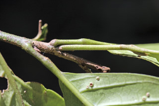
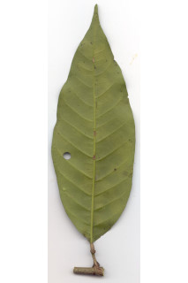
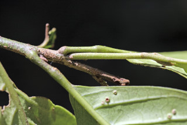
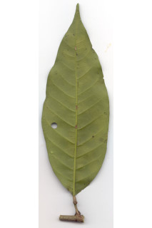

Trees up to 6 m tall.
6 ಮೀ. ಎತ್ತರದವರೆಗೆ ಬೆಳೆಯುವ ಮರಗಳು.
6 മീറ്റര് വരെ ഉയരമുള്ള മരങ്ങള്.
மரங்கள், 6 மீ. உயரம் வரை வளரக்கூடியது
Bark greyish brown, smooth; blaze reddish brown.
ತೊಗಟೆ ಬೂದು ಮಿಶ್ರಿತ ಕಂದು ಬಣ್ಣದಲ್ಲಿದ್ದು ನಯವಾಗಿರುತ್ತದೆ;ಕಚ್ಚು ಮಾಡಿದ ಜಾಗ ಕೆಂಪು ಮಿಶ್ರಿತ ಕಂದು ಬಣ್ಣದಲ್ಲಿರುತ್ತದೆ.
മിനുസമായ, ചാരകലര്ന്ന തവിട്ട് നിറത്തിലുള്ള പുറംതൊലി; വെട്ട് പാടിന് ചുവപ്പ് കലര്ന്ന തവിട്ട് നിറം.
மரத்தின் பட்டை சாம்பல் கலந்த ப்ரவுன் நிறமானது, வழுவழுப்பானது; உள்பட்டை சிவப்பு கலந்த ப்ரவுன் நிறமானது.
Young branchlets stellate hairy.
ಎಳೆಯ ಕಿರುಕೊಂಬೆಗಳು ನಕ್ಷತ್ರ-ರೋಮಗಳಿಂದ ಆವರಿಸಿರುತ್ತವೆ.
ഇളം ഉപശാഖകള് നക്ഷത്രാകാര രോമിലമാണ്.
சிறிய நுனிக்கிளைகள் நட்சத்திர வடிவ உரோமங்களுடையது.
Latex white, not profuse.
ಸಸ್ಯ ಕ್ಷೀರ ಬಿಳಿ ಬಣ್ಣ ಹೊಂದಿದ್ದು ವಿಫುಲವಾಗಿರುವುದಿಲ್ಲ.
വെളുത്ത സ്രവം, സമൃദ്ധമല്ല.
மிகக் குறைந்தளவு வெள்ளை நிறமான பால் சுரக்ககூடியது.
Leaves simple, alternate, spiral; petioles 1.3-4 cm long, swollen at both ends, stellate hairy; lamina 9.5-22.5 x 4.9-10.4 cm, elliptic to obovate, apex acuminate with blunt tip, base obtuse or acute, margin entire; midrib flat above; secondary_nerves 12-14 pairs, prominent beneath; tertiary_nerves reticulo-percurrent.
ಎಲೆಗಳು ಸರಳವಾಗಿದ್ದು ಪರ್ಯಾಯ ಮತ್ತು ಸುತ್ತು ಜೋಡನಾ ಮಾದರಿಯಲ್ಲಿರುತ್ತವೆ; ತೊಟ್ಟುಗಳು 1.3 ರಿಂದ 4 ಸೆಂ.ಮೀ. ಉದ್ದವಿದ್ದು ಎರಡೂ ತುದಿಯಲ್ಲಿ ಉಬ್ಬಿಕೊಂಡಿರುತ್ತವೆ ಮತ್ತು ನಕ್ಷತ್ರ-ರೋಮಗಳಿಂದ ಕೂಡಿರುತ್ತವೆ;ಪತ್ರಗಳು9.5-22.5 X 4.9-10.4 ಸೆಂ.ಮೀ. ಗಾತ್ರದಲ್ಲಿದ್ದುಅಂಡವೃತ್ತದಿಂದ ಬುಗುರಿಯ ಆಕಾರದಲ್ಲಿದ್ದು ಮೊಂಡಾಗ್ರವುಳ್ಳ ಕ್ರಮೇಣ ಚೂಪಾಗುವ ತುದಿ ಹೊದಿರುತ್ತವೆ; ಪತ್ರಗಳ ಬುಡ ಚೂಪಲ್ಲದ ಅಥವಾ ಚೂಪಾದ ರೀತಿಯಲ್ಲಿರುತ್ತದೆ;ಅಂಚು ನಯವಾಗಿರುತ್ತದೆ;ಮಧ್ಯನಾಳ ಮೇಲ್ಭಾಗದಲ್ಲಿ ಚಪ್ಪಟೆಯಾಗಿರುತ್ತದೆ; ಎರಡನೇ ದರ್ಜೆಯ ನಾಳಗಳು 12-14 ಜೋಡಿಗಳಿದ್ದು ಪತ್ರದ ತಳಭಾಗದಲ್ಲಿ ಪ್ರಮುಖವಾಗಿರುತ್ತವೆ;ಮೂರನೇ ದರ್ಜೆಯ ನಾಳಗಳು ಜಾಲಬಂಧ ನಾಳ ವಿನ್ಯಾಸದಲ್ಲಿದ್ದು ಎಲೆ ದಿಂಡಿಗೆ ಅಡ್ಡವಾಗಿ ಕೂಡುತ್ತವೆ.
ലഘുവായ ഇലകള്, ഏകാന്തര ക്രമത്തില്, സര്പ്പിളമായടുക്കിയതാണ്; നക്ഷത്രാകാര രോമിലമായതും, രണ്ടറ്റത്തും വീര്ത്തതുമായ, ഇലഞെട്ടിന് 1.3 സെ.മീ മുതല് 4 സെ.മീ വരെ നീളം; പത്രഫലകത്തിന് 9.5 സെ.മീ മുതല് 22.5 സെ.മീ വരെ നീളവും 4.9 സെ.മീ മുതല് 10.4 സെ.മീ വരെ വീതിയുമാണ്, ആകൃതി ദീര്ഘവൃത്തം തൊട്ട് അപഅണ്ഡാകാരം വരെയാണ്, മുനപ്പില്ലാത്ത അറ്റത്തോടു കൂടിയ ദീര്ഘാഗ്രമാണ്, പത്രാധാരം ഉപകോണാകാരമോ നിശിതമോ ആണ്, അരികുകള് അവിഭജിതമാണ്; മുഖ്യസിര മുകളില് പരന്നതാണ്; കീഴെ പ്രബലമായിരിക്കുന്ന, 12 മുതല് 14 വരെ ജോഡി ദ്വിതീയ ഞരമ്പുകള്; ത്രിതീയ ഞരമ്പുകള് ജാലിത പെര്കറന്റ് വിധത്തിലാണ്.
இலைகள் தனித்தவை, மாற்றுஅடுக்கமானவை, சுழல் போன்று அமைந்தவை; இலைக்காம்பு 1.3-4 செ.மீ. நீளமானது, காம்பின் இருமுனைகளும் உப்பியவை, நட்சத்திர வடிவ உரோமங்களுடையது; இலை அலகு 9.5-22.5 X 4.9-10.4 செ.மீ., நீள்வட்டம் முதல் தலைகீழ் முட்டை வடிவானது, அலகின் நுனி அதிக்கூரியதுடன் முனை மழுங்கியது, அலகின் தளம் மொட்டையானது அல்லது கூரியது, அலகின் விளிம்பு முழுமையானது, மையநரம்பு மேற்பரப்பில் அலகின் பரப்பிற்கு சமமானது; இரண்டாம் நிலை நரம்புகள் 12-14 ஜோடிகள், அலகின் கீழ்பரப்பில் தெளிவானது; மூன்றாம் நிலை நரம்புகள் வலைப்பின்னல்-பெர்க்கரண்ட்.
Inflorescence panicle, shorter than leaves.
ಪುಷ್ಪಮಂಜರಿಗಳು ಪುನರಾವೃತ್ತಿಯಾಗಿ ಕವಲೊಡೆಯುವ ಮಾದರಿಯಲ್ಲಿದ್ದು ಎಲೆಗಳಿಗಿಂತ ಚಿಕ್ಕದಾಗಿರುತ್ತವೆ.
പൂങ്കുലകള് ഇലകളേക്കാള് ചെറിയ, പാനിക്കിളുകളാണ്.
மஞ்சரி பேனிக்கிள் வகை, இலையின் நீளத்தை விட குட்டையானது.
Capsule, oblong or obovoid, beaked, 2.5-4 cm long, densely rusty-tomentose.
ಸಂಪುಟ ಫಲಗಳು 2.5-4 ಸೆಂ.ಮೀ. ಉದ್ದ ಹೊಂದಿದ್ದು ಚತುರಸ್ರ ಅಥವಾ ಬುಗುರಿಯ ಆಕಾರದಲ್ಲಿದ್ದು ಅಗ್ರದಲ್ಲಿ ಕೊಕ್ಕಿನ ಸಮೇತವಿರುತ್ತವೆ ಮತ್ತು ದಟ್ಟವಾದ ತುಕ್ಕು ಬಣ್ಣದ ಮೃದುತುಪ್ಪಳದಿಂದ ಕೂಡಿರುತ್ತವೆ.
കായ, കൊക്കുള്ളതും കനത്തില് തുരുമ്പന് രോമിലമായതും 2.5 സെ.മീ മുതല് 4 സെ.മീ വരെ നീളമുള്ള ആയതാകാരമോ അപഅണ്ഡാകാരമോ ആയ കാപ്സ്യൂള് ആണ്.
வெடிகனி (கேப்சூல்), நீள்சதுரம் அல்லது தலைகீழ் முட்டை வடிவானது, நுனி நீட்சியுடையது 2.5-4 செ.மீ. நீளமானது, அடர்த்தியாக துருப்போன்ற உரோமங்களுடையது.
 


